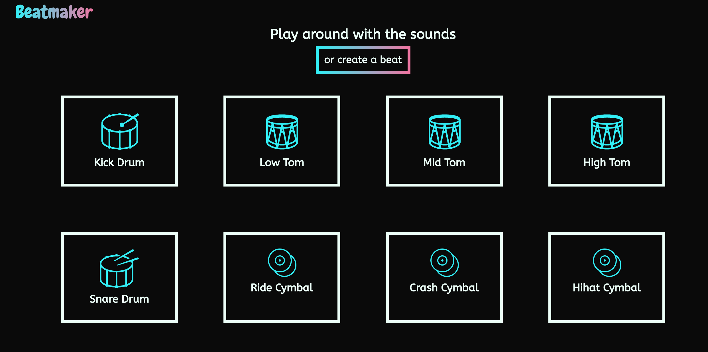
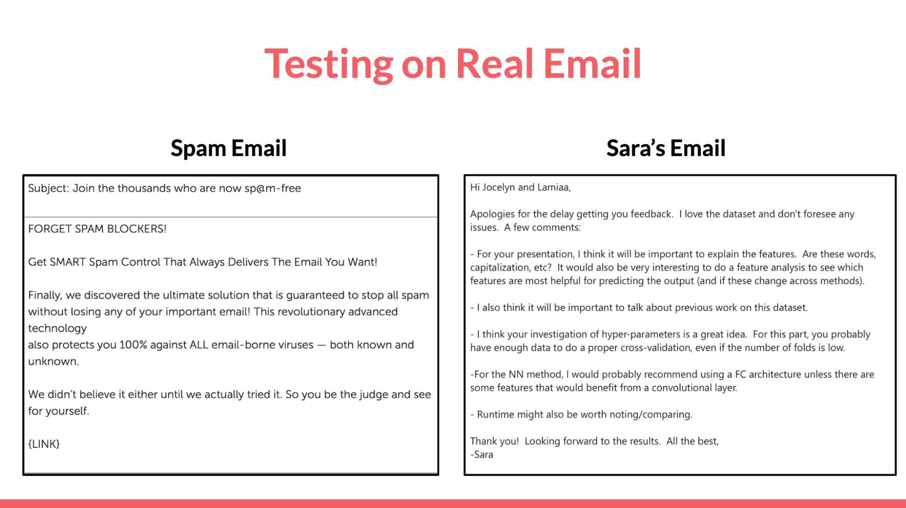
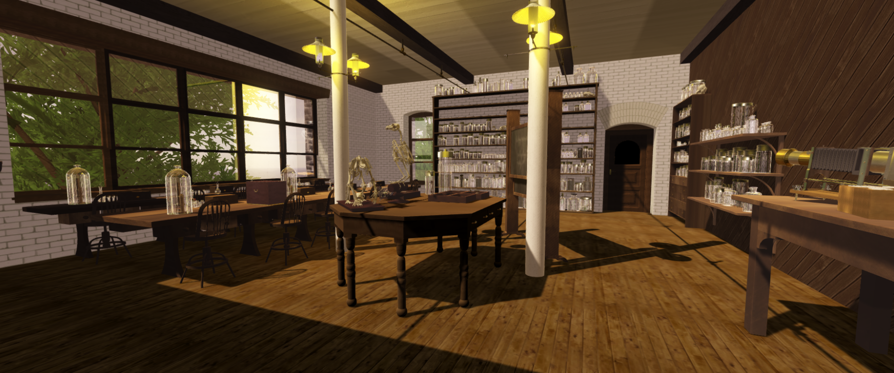

My Projects
Most of my personal projects are web or VR based.
Please click on the title of each project to learn more!
Django Ecommerce Website // June 2020
Python Django, JavaScript, HTML/CSS, Bootstrap
A full-stack project to recreate an ecommerce site with authenticated user and guest checkout, cookie integration and Paypal payment integration
Beatmaker // June 2020
HTML/CSS, Vanilla JavaScript
Github

A fully responsive beatmaker website integrated with a looping mechanism to make beats.
GMPCares.net // March 2020
Flask

A website to connect neighbors in high-risk categories with volunteers to perform daily tasks during the COVID-19 pandemic.
Spam Email Detection // April - May 2019
Python, Tensorflow, sklearn
A Machine Learning project that implemented and evaluated the accuracy of Decision Trees, Random Forests, AdaBoost, Naive Bayes and Fully Connected Neural Networks to detect spam vs non-spam emails.
Bryn Mawr Women in Science // 2017 - 2019
Unity 3D, C#, Oculus Rift, WebGL, AFrame, SketchFab
A Virtual Reality project to contextualize how women studied science at Bryn Mawr College in the early 1900s.
VR Orchestra App // Work in Progress
Unity 3D, C#, Oculus Rift
My senior project for my Computer Science degree. A VR music education application that teaches children about instruments in the orchestra.